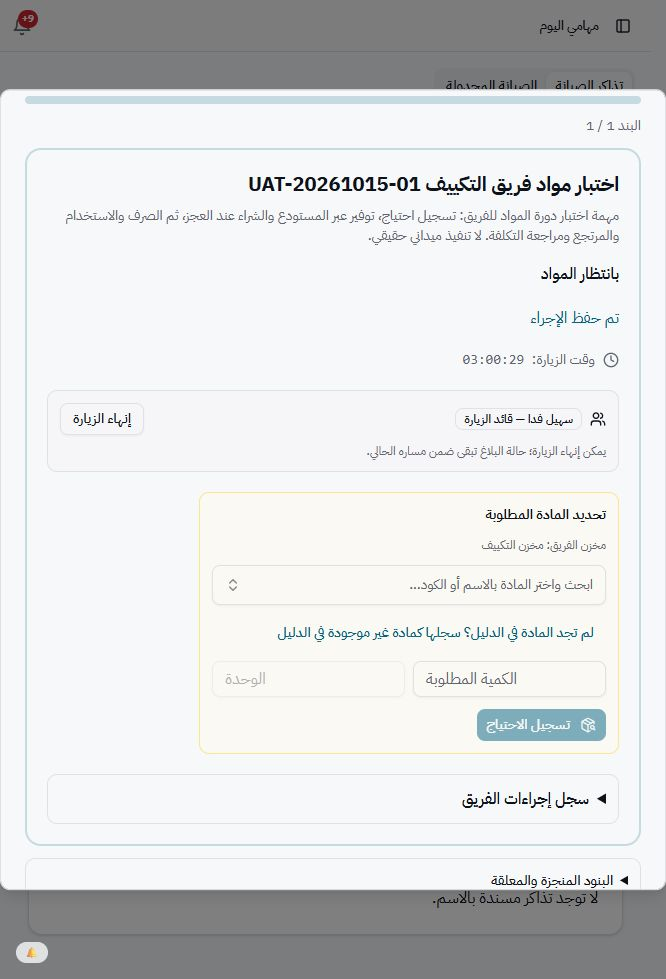
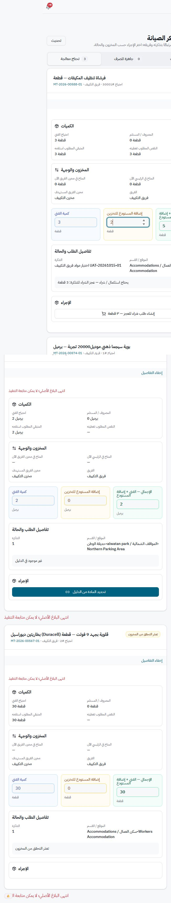
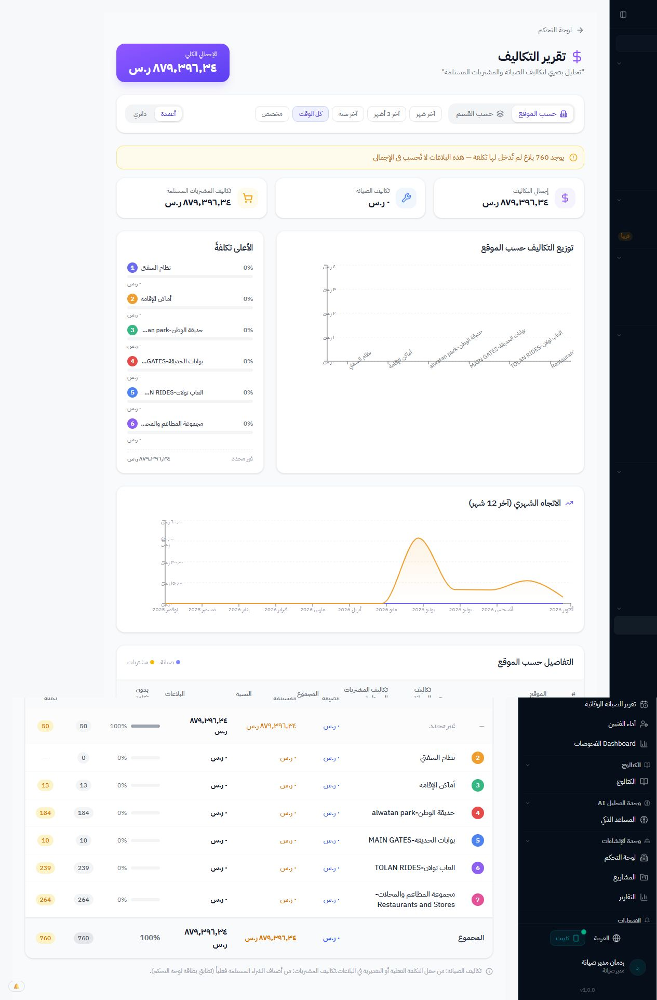
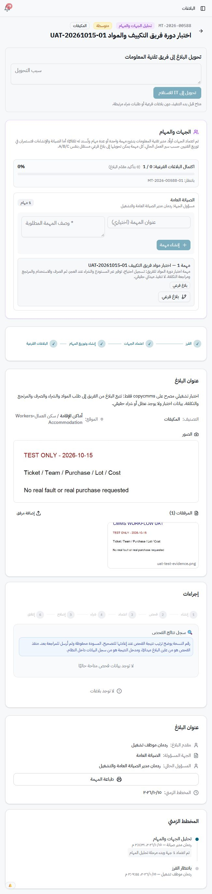
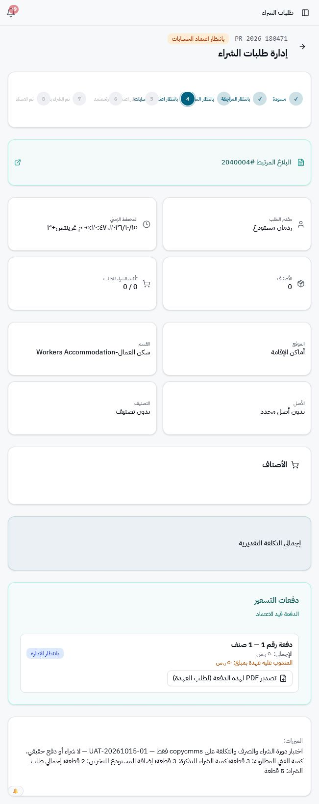

تقرير الجولة الأولى لاختبار البلاغ والفريق وطلب الشراء
١٥/١٠/٢٠٢٦، ٥:٣٨ م — قاعدة copycmms فقط
الاختبار جزئي، ولم يصل إلى الصرف أو حساب التكلفة أو الإغلاق.آخر حالة مؤكدة: PR-2026-180471 بانتظار اعتماد الإدارة العليا بعد نجاح اعتماد الحسابات. توجد ملاحظة جاهزية في واجهة التكلفة الجديدة، وتعذر استكمال التفاعل الآلي بعد فتح معاينة سند العهدة PDF.
المستندات وبيانات الاختبار
الرئيسي MT-2026-00588 — الفرعي MT-2026-00588-01 — طلب الشراء PR-2026-180471.
الموقع: أماكن الإقامة. القسم: سكن العمال. الفريق: فريق التكييف، مخزنه 60002. الفني: SUHAIL.
الصنف: فرشاة تنظيف المكيفات، الكود 731-017. احتياج الفني 3 قطع، إضافة التخزين 2، إجمالي الشراء 5. سعر الاختبار 10 ريالات للوحدة، إجمالي 50 ريالًا. لا شراء أو دفع حقيقي.
الخطوات المنفذة
| الحساب | الاختبار | النتيجة |
|---|
| RED7 | إنشاء البلاغ MT-2026-00588 | نجح |
| RED6 | فرز البلاغ إلى الصيانة العامة ومسؤولها RED2 | نجح |
| RED2 | إنشاء المهمة وإسنادها لفريق التكييف وإنشاء MT-2026-00588-01 | نجح |
| SUHAIL | الدخول إلى مهامي اليوم والتبويبين والقائمة المحدودة | نجح |
| SUHAIL | بدء الزيارة وطلب 3 قطع ثم إنهاء الزيارة وبقاء الطلب بانتظار المواد | نجح مع ملاحظة الوقت |
| RED | ظهور الاحتياج وإضافة قطعتين للتخزين؛ الإجمالي 5 | نجح |
| RED | إنشاء PR-2026-180471 وربط تغطية 3 قطع فقط باحتياج الفني | نجح |
| RED6 | اعتماد الصنف وإسناده للمندوب RED3 | نجح |
| RED3 | تسعير 5 × 10 = 50 ريالًا وإرسال دفعة التسعير للحسابات | نجح |
| RED4 | اعتماد الحسابات بعهدة اختبار 50 ريالًا؛ الحالة بانتظار الإدارة | نجح مع ملاحظة تحديث الشاشة |
الملاحظات التي تحتاج مراجعة
1. فرق زمن الزيارة — متوسط
بدأ العداد بنحو 03:00:07 مباشرة بعد بدء زيارة جديدة. سجل البداية في القاعدة 14:15:10 UTC، والعداد بعد ثوانٍ يعرض ثلاث ساعات. يحتاج مراجعة تفسير المنطقة الزمنية.
عرض الدليل

2. احتياجات بلاغات منتهية في طابور المعالجة — متوسط
الاحتياجان #1 و#2 للبلاغين MT-2026-00574-01 وMT-2026-00567-01 ما زالا محسوبين، مع رسالة أن البلاغ الأصلي انتهى. لم تجر أي عملية عليهما.
عرض الدليل

3. واجهة التكلفة الجديدة غير ظاهرة — يعوق اختبار التكلفة
التقرير الحي يعرض التقرير السابق بلا تبويب صافي تكلفة المواد، والبلاغ لا يعرض بطاقة تكلفة اللوت. سبب غيابها بين النشر والتفعيل لم يحسم. لم ينفذ صرف قبل تأكيد الجاهزية.
عرض الدليل

4. اختلاف تصنيف البلاغ الفرعي — متوسط
الرئيسي مصنف مكيفات، بينما الفرعي الناتج عن الفريق يعرض عام. بقي الموقع والقسم صحيحين. يلزم تحديد أثره على الفلاتر والتقارير.
عرض الدليل

5. تأخر تحديث رأس الطلب بعد اعتماد الحسابات — متوسط
تغيرت الدفعة إلى بانتظار الإدارة، بينما ظل رأس الصفحة بانتظار الحسابات وأصبح عدد الأصناف صفرًا. انتقال القاعدة محفوظ وصحيح.
عرض الدليل

ملاحظة أداء: ظهرت فترات انتظار أثناء بعض إجراءات الحفظ ورفع المرفق. لا يوجد قياس مستقل للشبكة يفصل زمن النظام عن أداة التصفح، لذلك لم يعين سبب أو رقم أداء نهائي.
حدود الجولة
أنشئت مستندات اختبار من الواجهة فقط. الاتصال المباشر بالقاعدة اقتصر على SELECT والتحقق. لم ينفذ SQL تعديلي أو ترحيل، ولم يعدل كود البرنامج أو بيانات تاريخية. لم تنفذ حركة مخزون أو صرف أو مرتجع. قيمة التكلفة الجديدة لم تثبت عمليًا بعد.
التعطل في التفاعل الآلي مع المتصفح بعد معاينة PDF قيد أداة الاختبار، ولم يصنف خللًا مؤكدًا في التطبيق. ما زال تأكيد نشر وتفعيل تطوير التكلفة مطلوبًا قبل اعتماد اختبار تلك الطبقة.
المتبقي
- Management approval RED8
- Record purchase and warehouse receipt
- Receipt unit conversion validation
- Transfer from main to team warehouse
- Lot issue and recipient confirmation
- Usage, original-Lot return and net material cost
- Manager review, child closure and parent closure
- Other outcomes: OK, fixed without materials, blocked, external
- Construction role RED1 and gate role RED5
- Cross-team visibility using paint technicians
- IT workflow; IT account access remains to be provided
لا تعد بقية الأدوار أو المسارات ناجحة قبل تنفيذ خطواتها وتوثيق نتيجتها. أي إصلاح يحتاج موافقة مستقلة من صاحب المشروع.